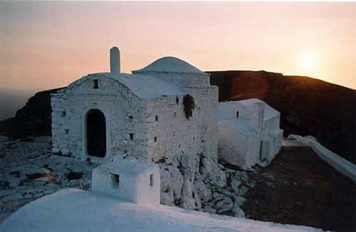

|

Πολυάριθμοι και διάσπαρτοι σε κάθε γωνιά του νησιού, ναοί και προσκυνήματα με λιτή αρχιτεκτονική και αυστηρό εξωτερικό περίγραμμα δένουν αρμονικά με το τραχύ και άγονο περιβάλλον των Κυθήρων. Είναι χτισμένοι με ντόπια υλικά, μικρού συνήθως μεγέθους, υποφωτισμένοι στο εσωτερικό τους, χωρίς ιδιαίτερη εξωτερική διακόσμηση, αλλά με πλούτο και ποικιλία ζωγραφικού διάκοσμου στο εσωτερικό.
Εμφανείς είναι οι επιδράσεις από την Πελοπόννησο στους ναούς της βυζαντινής περιόδου, όπως η Αγία Βαρβάρα στην Παληόχωρα, που αποτελεί χαρακτηριστικό δείγμα μονεμβασιώτικης βυζαντινής αρχιτεκτονικής.
Οι καμαροσκέπαστοι ναοί με τους στολισμένους με θυρώματα τοίχους, ανήκουν στην εποχή της Βενετοκρατίας και παραπέμπουν σε ανάλογα παραδείγματα της Κρήτης του 14ου και 15ου αιώνα. Σαφέστατο βενετσιάνικο χαρακτήρα έχουν η Παναγία η Καστρινή στη Χώρα και ο Εσταυρωμένος, καθεδρικός ναός της Μητροπόλεως Κυθήρων, οι οποίες ήταν αρχικά καθολικές εκκλησίες.
Οι τοιχογραφίες των εκκλησιών της βενετσιάνικης περιόδου ανάγονται κυρίως στην Κρητική Σχολή.
|
|